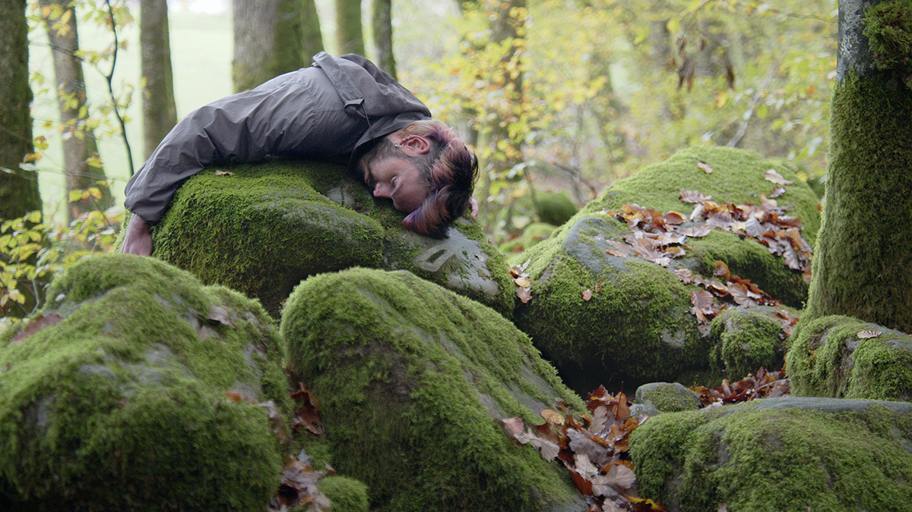

Maybe It's Tomorrow, 2023
Vidéo 2K, son stéreo
8:00 min.
Vue d'exposition, Galerie Historicher Keller, Berlin
La mousse a poussé sur une pierre sculptée en forme de visage humain endormi, allant jusqu'aux creux des cernes. La pierre est-elle figée dans un sommeil millénaire ou alourdie par une fatigue sans fin ? Les images satellites tracent la ligne crépusculaire de la Terre, révélant la nuit et le jour, l'aube et le crépuscule, passant au-dessus de lieux tels que les villes qui brillent perpétuellement. Elles évoquent un monde presque toujours illuminé, jusqu'à ce que le cadre atteigne une zone sans données.

Avec : Aurélien Finance
Sculpteur : Philippe Leonard
Assistante de projet : Laura Haby
Caméra : Jessica Arseneau, Laura Haby
Montage visuel/sonore/étalonage : Jessica Arseneau
Remerciements : Marie Paule Bilger, Jean-Jacques Delattre, Emmanuel Henninger, Jeremy Ledda, Florent Rusch, KM0, La Ferme Aventure, Motoco


Image fixe tirées du film
Vues d'exposition, Galerie Historischer Keller, Berlin
Ce projet a été créé durant la résidence de création ALLEZ & ZURÜCK du Goethe-Institute Strasbourg, en collaboration avec la Kunsthalle Mulhouse, Motoco, Goethe-Institut Nancy, le Bureau des arts plastiques et supporté par OFAJ DFJW, DRAC Grand Est et Centre Français de Berlin. Ce projet bénificie du support de ArtsNB.
Ce projet est soutenu par le Conseil des arts du Nouveau-Brunswick